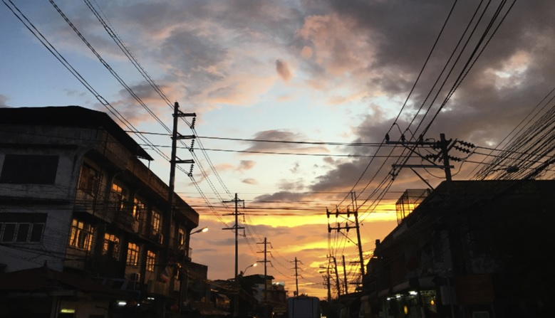

A produção de eletricidade é o procedimento no qual diferentes tipos de energia, como energia cinética, potencial, térmica ou luminosa, são transformadas em eletricidade. Esse procedimento pode se dar utilizando diferentes fontes de energia, as quais são classificadas de maneira abrangente em renováveis e não renováveis, como por exemplo;
-Energia Térmica, combustão ou queima de materiais;
-Energia Elétrica, conversão de energia por meio de diversos combustíveis;
-Energia Química, liberada ou formada em uma reação química;
-Energia Nuclear, liberada pelo núcleo de átomos que sofrem a ação de desintegração de suas partículas;
-Energia Solar, proveniente da luz e do calor do sol;
-Energia Luminosa, gerada por meio de fontes naturais, como o sol e o fogo;
-Energia Sonora; perda simultânea do movimento dois ou mais objetos, é convertida em som.
Energia Hidroelétrica(ou hidrelétrica), é gerada ao transformar a força da água em energia elétrica.
Energia Eólica, transforma em eletricidade a força de um recurso inesgotável como o vento
Os recursos energéticos são muito importantes para o desenvolvimento de um país. A qualidade e o nível de capacidade das fontes de energia num determinado local são indicativos do nível de desenvolvimento da região.
o Brasil não é diferente: à medida que o país foi se modernizando, o setor energético brasileiro foi se desenvolvendo. As principais fontes de energia do Brasil, atualmente, são: energia hidroelétrica, petróleo, carvão mineral e os biocombustíveis, além de algumas outras utilizadas em menor escala, como gás natural e a energia nuclear.
